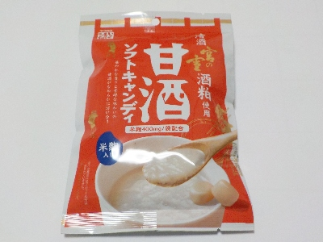
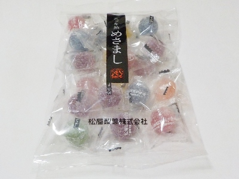
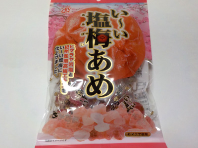

松屋製菓の宮の雪甘酒ソフトキャンディ
更新日 : 2025/04/10

90グラム入りなんですが、ソフトキャンディーは飴より比重が軽いのか量が多く入っているって思いました。
私は甘酒が好きなのでとっても美味しかったです。お酒系の甘酒らしいクセがあっていいですね。ソフトキャンディが口の中で溶けやすく、口の中がしっかり甘くなしました。これくらい甘いと立て続けに2個は食べないな。
224円で購入
三重県伊勢市御薗町新開307-1
更新日 : 2025/04/10

90グラム入りなんですが、ソフトキャンディーは飴より比重が軽いのか量が多く入っているって思いました。
私は甘酒が好きなのでとっても美味しかったです。お酒系の甘酒らしいクセがあっていいですね。ソフトキャンディが口の中で溶けやすく、口の中がしっかり甘くなしました。これくらい甘いと立て続けに2個は食べないな。
224円で購入
更新日 : 2025/04/10

ニッキ飴は好きなんですけど、私は体質が合わないようです。
舌が炎症して味覚が鈍くなりました。私は今後ニッキ飴とかシナモンは注意した方がいいかもしれないです。
残念だな。
更新日 : 2023/01/12

パッケージに「い〜い塩梅に仕上げました。」ありますが、そんな感じがする飴です。甘過ぎず辛過ぎず、爽やかな梅味も丁度いい加減だと思いました。
この飴はきっとまた買うでしょう。